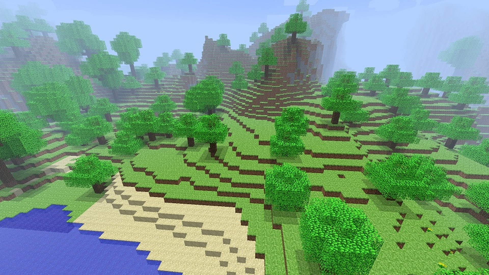
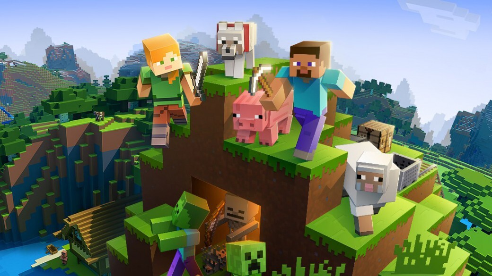
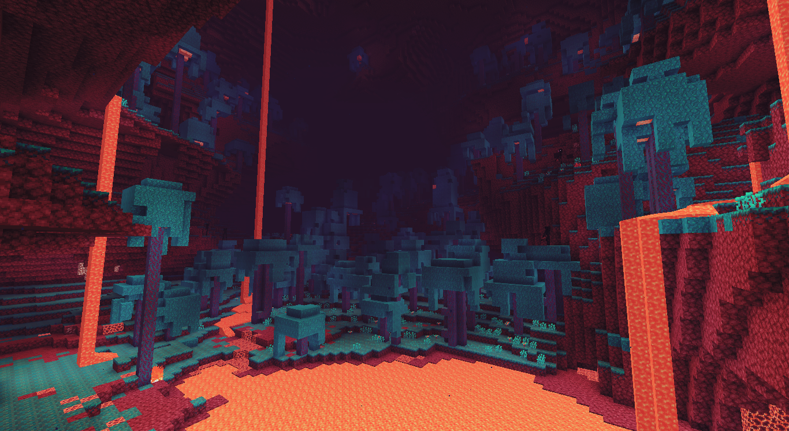
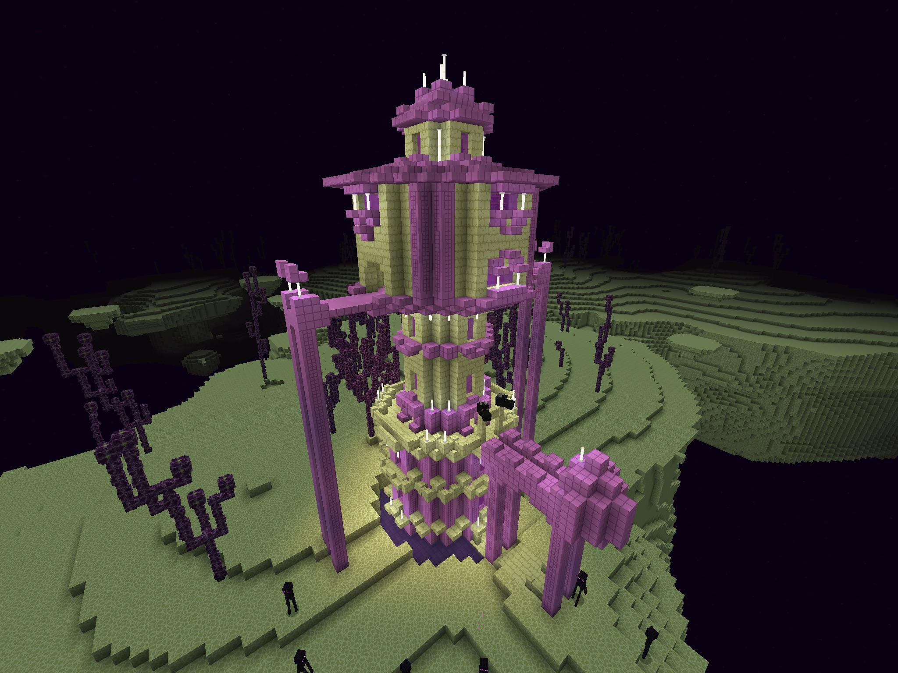

Bienvenido al mejor mundo
para transformar toda tu
imaginación en algo increible!

Información
Nosotros somos un videojuego de construcción, de tipo "mundo abierto" o sandbox. Esta pensado para pasar un raeto de diversión, por lo que no posee un objetivo específico, permitiéndole al jugador mucha libertad en cuanto a la elección de su forma de jugar. Creado originalmente por el sueco Markus Persson (conocido comúnmente como "Notch"), y posteriormente desarrollado por su empresa, Mojang Studios.
Conocer mas
Mundos
Los tipos de mundo son distintas variantes que se pueden elegir al crear un mundo


Comunidad
Minecraft Live
Microsoft ha anunciado que la celebración anual de Minecraft de este año, Minecraft Live (“Minecon” en años anteriores), tendrá lugar virtualmente el 3 de octubre a las 18:00 CEST.
El evento será todo un gusto para los fans de Minecraft, y cuenta con un tráiler para ir abriendo paso a la imaginacion, puedes ver el trailer a continuación: